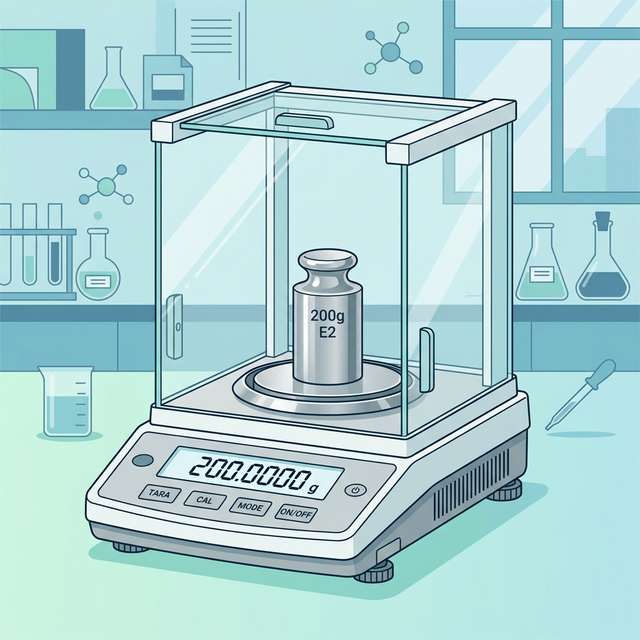

⚖️ Balance Performance Check
Standard operating procedure for performance check of all analytical balances in the laboratory. Ensures weighing accuracy and traceability through calibrated standard weights.

| Balance | Brand / Model | Log Book | Repeatability Form |
|---|---|---|---|
| Balance 1 | Sartorius MSA 225S-100-DA | PT/004A | PT/004B |
| Balance 2 | Mettler Toledo PG-603S | PT/005A | PT/005B |
| Balance 3 | Mettler Toledo XP 205 DR | PT/006A | PT/006B |
| Balance 4 | Sartorius MSE 225S-100-DU | PT/018A | PT/018B |
| Balance 5 | Mettler Toledo ME204T | — | — |
- • Temperature: 20 ± 3°C
- • Relative Humidity: 45% – 80%
- • Airflow: Keep away from A/C vents and direct drafts
- • Warm-up: Minimum 30–60 minutes prior to verification
- • Leveling: Ensure the leveling bubble is perfectly centered
- • Cleanliness: Clean weighing pan and draft shield with antistatic brush
To ensure the balance provides consistent readings regardless of where the load is placed on the measuring pan. Conducted using a standard weight equivalent to approx. 30% to 50% of the balance capacity.
- Place the selected standard weight exactly in the center of the pan. Record the reading ($C$). Tare the balance.
- Move the same weight to the front-left quadrant. Record the reading ($FL$).
- Move the weight to the back-left quadrant. Record the reading ($BL$).
- Move the weight to the back-right quadrant. Record the reading ($BR$).
- Move the weight to the front-right quadrant. Record the reading ($FR$).
- Calculate the maximum eccentric error: $\Delta E_{max} = \max(|C - FL|, |C - BL|, |C - BR|, |C - FR|)$
To determine the ability of the balance to provide the same result for repeated weighings of the same load under identical conditions. Conducted using a standard weight close to the typical working load.
- Zero the balance. Ensure display reads exactly $0.0000 \text{ g}$.
- Place the selected standard weight on the center of the pan. Close the draft shield.
- Wait for the reading to stabilize (stability indicator appears). Record reading $x_1$.
- Remove the weight. Zero/Tare the balance if it does not return to exactly $0.0000 \text{ g}$.
- Repeat Steps 2–4 for a total of 10 consecutive times ($x_1, x_2, ..., x_{10}$).
- Calculate the Standard Deviation ($S_r$) using the formula:
To verify that the balance displays the correct value across its entire operating range. Measurements are taken at approx. 0%, 25%, 50%, 75%, and 100% of the maximum capacity.
- Select standard weights corresponding to the 5 test points.
- Zero the balance.
- Place the first weight on the pan, let it stabilize, and record the displayed value.
- Repeat for all test points up to Maximum Capacity.
- Calculate the Error of Indication ($E$) for each point:
| Weight Set | OIML Class | Asset No. | Usage / Assignment | Recalibration |
|---|---|---|---|---|
| Standard Set 1 | E2 | 006-004828 | Analytical Balances (Makmal Besar) | Annually |
| Standard Set 2 | F2 | 006-004828 | Top-loading Balances (Makmal Besar) | Annually |
| Standard Set 3 | F1 | 006-003632 | UPR Balance | Annually |
| Standard Set 4 | — | 006-004872 | UPM Balance | Annually |
- ✅ Eccentricity: $\Delta E_{max}$ must be $\le$ Maximum Permissible Error (MPE) for the specific load.
- ✅ Repeatability: Standard deviation ($S_r$) must be $\le$ Manufacturer's specification for repeatability limitation.
- ✅ Linearity: Error ($E$) at each point must be $\le$ Maximum Permissible Error (MPE) specified by OIML R76 guidelines.
1. Clean the weighing pan, check the leveling bubble, and re-run internal calibration.
2. Repeat the verification test by changing the analyst (Second Analyst).
3. If Second Analyst also fails, tag the balance immediately with an OUT OF SERVICE label.
4. Notify the Supervising Pharmacist immediately to arrange for external maintenance/calibration.